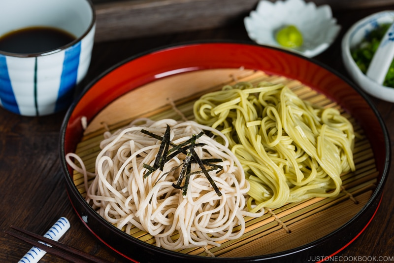

Zaru Soba (Cold Soba Noodles)

Light and refreshing, Zaru Soba (Cold Soba Noodles) will be your summer go-to staple. Ten minutes is all you need to whip up this delicious Japanese chilled noodle dish.
Is there any specific hot-weather food that you enjoy in your culture? In Japan, during the unbearable hot and humid summer, the classic cold Japanese noodle, Zaru Soba (ざるそば) is the perfect dish to cool down!
Ingredients
Concentrated soup base (Mentsuyu)
- 1/4 cup sake
- 1/2 cup soy sauce
- 1/2 cup mirin
- 1 piece kombu (dried kelp)
- 1/2-1 cup katsuobushi (dried bonito flakes)
Zaru Soba
- 14 oz dried soba noodles
- shredded nori seaweed
- 6 tbsp mentsuyu
- 1 1/8 cups iced water
Garnish
- 2 green onions/scallions
- wasabi
Instructions
Homemade Mentsuyu
- Add 1/4 cup sake to a medium saucepan and bring it to a boil over medium-high heat. Let the alcohol evaporate for a few seconds.
- Add 1/2 cup soy sauce and ½ cup mirin. Tip: I add an extra 1 Tbsp mirin for my familys preference.
- Add 1 piece kombu (dried kelp) and 1/2-1 cup katsuobushi (dried bonito flakes). Use the maximum amount of katsuobushi for more intense bonito flavor.
- Bring it to a boil and simmer on low heat for 5 minutes. Turn off the heat. Let it steep and cool completely. Strain the mentsuyu and set aside. Tip: You can keep this concentrated soup base in an airtight container and store it in the refrigerator for up to a month.
Soba Noodles
- Boil a lot of water in a large pot. Unlike pasta, you do not add salt to the cooking water. Add 14 oz dried soba noodles (buckwheat noodles) to the boiling water, distributing them around the pot in a circular pattern to separate the noodles from each other. Cook the noodles according to the package instructions. Stir occasionally so they dont stick to each other. The noodles are done when just tender; do not overcook. Reserve 1-1 1/2 cups of the cooking water called sobayu and set aside to enjoy at the end of the meal.
- Drain the soba in a sieve and rinse them under cold running water with your hands to get rid of the excess starch. This is a very important step to keep the noodles from sticking to each other.
- Shake the sieve to drain the water completely. Then, transfer the noodles to a large bowl of iced water. Chill the noodles for 30 seconds, drain well, and set aside.
To Serve
- Place bamboo sieves or mats over individual plates (to catch the draining water from the noodles). Place one serving of soba noodles on each mat and garnish with shredded nori seaweed (kizami nori) on top.
- Prepare the soba dipping sauce using a 1-to-3 ratio of homemade mentsuyu to water. Combine 6 Tbsp mentsuyu (concentrated noodle soup base) and 1⅛ cups iced water in a measuring cup and check the taste. If its salty, add more water, and if its too dilute, add more mentsuyu. Divide the dipping sauce into individual cups.
- Chop 2 green onions/scallions and put on individual small plates. Add a bit of wasabi to the plates. Serve with the soba noodles and individual cups of dipping sauce. When youre done with the noodles, pour the reserved soba cooking water (sobayu) into the rest of the sauce in your dipping cup and enjoy it as a soup broth.
- For a more substantial meal, enjoy this Zaru Soba with a variety of vegetables like mushrooms, carrots, daikon radish, and lettuce/cabbage-based salads. Its also common to serve zaru soba with tempura, called tenzaru (天ざる). Try it with Vegetable Tempura and Shrimp Tempura.
Home